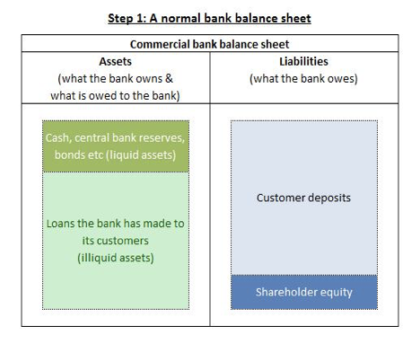
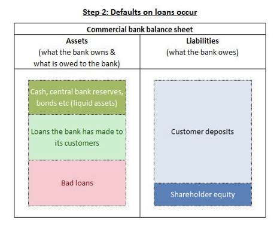
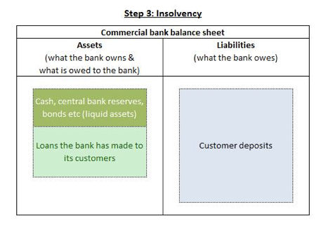

Chose one financial intermediary from each type of non-banking institutions (long-term saving institutions, risk spreaders and risk takers) and explain how they channel household savings into financial investment (200 words max)
Banks, Investment Banks, Building societies or insurance companies are financial intermediary financial institutions. By providing indirect lending, savers can lend their savings to said financial institutions, which in turn lend these savings to borrowers. Following are three types of these non-banking institutions.
Allow small savers a stake in large and diversified portfolios. These portfolios are professionally administrated and core aspect is, that investors with small contributions can accumulate theirs with many other investors, varying in size.
The core function in their operations is it, to accumulate many low-risk e.g. household savings and investing this accumulation, constituent of low-risks, into a greater risk investment. An example of this, are Hedge funds, who's operations consist of accumulating investors money and investing this into many varying systems. Hence, they are profit-maximising as a function of risk management.
Pension funds, as their name suggests, provide funds for pension, where pensions are to be referred to as the time after retirement. Hence, their provision takes place in form of many payments over time, accumulating and earning interest, in order to be paid out at a later point in time, in this case the event of retirement.
Gordons plc has an annual turnover of £3 million and a pre-tax profit of £400,000. It is not quoted on a stock exchange and the family owning all the shares has no intention of permitting the sale of shares to outsiders or providing more finance themselves. Like many small and medium-sized firms, Gordons has used retained earnings and a rolled-over overdraft facility to finance expansion. This is no longer seen as adequate, especially now that the bank manager is pushing the firm to move to a term loan as its main source of external finance. You, as the recently hired finance director, have been in contact with some financial institutions. The Matey hire purchase company is willing to supply the £1 million of additional equipment the firm needs. Gordons will have to pay for this over 25 months at a rate of £50,000 per month with no initial deposit.The Helpful Leasing Company is willing to buy the equipment and rent it to Gordons on a finance lease stretching over the four-year useful life of the equipment, with a nominal rent thereafter. The cost of this finance is virtually identical to that for the term loan, that is, 13 per cent annual percentage rate.
Required. Write a report for the board of directors explaining the nature of the four forms of finance which may be used to purchase the new equipment: hire purchase, leasing, bank term loan and overdraft. Point out their relative advantages and disadvantages. (350 words max – you might want to simple create a table and explain pros and cons)
| Form of Finance | Advantages | Disadvantages |
|---|---|---|
| Hire Purchase | Fixed Rate Loan, Interest rates tend to be low, Flexibility (balloon payments can reduce monthly costs), certainty, ease of arrangement | Monthly payments are higher than on a lease, as no depreciation is considered, The finance institution owns the equipment until all payments have been made. |
| Leasing | Fixed rate, certainty, obsolescence risk, small initial investment, lower taxes, availability | High rate of interest, considering the nature being majorly rental, Asset is not owned during or after the lease |
| Bank Term Loan | Flexibility is the highest, Grace periods and repo holidays | Notice of repayment needs clearing and thus creates time delay |
| Overdraft | Flexibility, ease to obtain | Time period in which repayments must happen is short, interest on credits |
Describe, explain and illustrate how a bank could find itself insolvent.
(200 words max+ tables if required)
Insolvency is the inability to pay ones owed debt. A Bank could find items in insolvency when their liabilities exceed their accumulated assets. That would specifically take place in the form of e.g. borrowers of the bank are not able to repay their loans, hence creating a cash shortage for the bank and if persistent for longer time, will lead to the loss of money and ultimately insolvency. A Bank could also face insolvency by the form of customers withdrawing all of their cash in a short period of time. Again, creating shortages for the Bank, in which the bank would be unable to loan money.
The first figure depicts a normal bank balance sheet. In the situation of insolvency, the third figure is the case. The second picture is a intermediary step in the process of insolvency. Where Bad loans are the loans that cannot be paid by the borrowers of the banks, as mentioned in the above paragraph. The third figure depicts how the bad loans are now being let go, as the probability of them ever being repaid diminishes drastically, and shareholder equity is also diminished, due to shareholders not intending to keep their money in an insolvent and thus not capable of operating bank.



Describe and explain how investment banks assist companies wishing to raise finance. (200 words max)
Flows of funds or allocations of capital are functions of importance for an investment bank. Investment Banks could provide the communication and execution of actions between a public / undefined group and private companies, planning to go public and raising capital by issuing shares. They could as well provide professional financial advice to companies and/or the sale of assets for the objective of raising capital.
As securities issuing companies are profit-maximising and henceforth seek for lowest-possible cost, depending on their circumstances, they could ask for professional financial advice from investment banks for resource allocation. Due to their profession, Investment banks have the knowledge, experience and contacts, which increase their capability of providing financial intermediary services, such as pairing a company trying to raise capital with one of their many contacts or SPV's. Investment Banks can assist and thus directly sell securities and due to their expertise many barriers to operate. With the issuing of securities the function of presenting IPO's (Initial public offering) is included. Hence, Investment Banks can perform IPO's for private companies for their objective of raising capital. And included as well, are SEO's (Seasoned equity offerings), the issuance of shares that already existed.
Explain the following key elements to insurance: (200 words max)
(a) asymmetric information
(b) adverse selection
(c) moral hazard
(d) float.
Is the circumstance, where one party in an economic transaction process holds greater knowledge about such process, than the other party. E.G: The Buyer of an item may not know the profit-margin of the seller is greater than somewhere else. Almost every economic transaction process is considered to contain asymmetric information.
Refers to the fact that e.g. individuals with a high-risk job tend to obtain life insurance. Asymmetric information could lead to making business with less-profitable or riskier investments, hence meaning making bad decisions based on asymmetric information.
Is the idea of the difference in acting depending on the protection of a party. Thus, protection could have positive as well as negative impacts, in this sense focus is more on the negative aspects, in which e.g. hourly paid personnel might choose to endure their breaks.
Refers to an error in the banking system, in which money could occur to be counted twice. This technical issue is created when a bank credits an account while a deposit is made at the same instance. The delay, resulting in a float occurs in the form of the check needing verification, prior to clearing.
Distinguish between funded and unfunded pension schemes, and give the advantages and drawbacks of each type of pension. (150 words max)
Funded pension schemes' function is it to accumulate investments from the labour force, in the form of constant payment intervals, hence growing in accumulated size and earning interest, to be paid to the investors at a later point in time, the event of retirement. The advantage is, that the short-term can mostly always be heavily financed if needed, due to the accumulation of investments. And a disadvantage would hence be that there is a lack of options of investment.
Unfunded pension schemes' function is to fund the current pensioners with the investments of the labour force, which contribute in irregular intervals. Hence, an advantage is, that in the situation of a short, the Treasury will provide support, as there is no accumulation as in a funded pension scheme. Due to the dependency of the state, these schemes have diminished in count in many countries, due to e.g. gaps in the population's ages, where the lack of sustainability is a disadvantage.
On 1 March 2011 a company raises finance by agreeing a six-month eurodollar loan for $20 million offered at an interest rate of 2.15 per cent. Calculate the cost of the loan in dollars.
(a) on a 30/360-day count basis (180 days)
(b) on a 365-day count, actual/365 basis (183 days)
Same thing, but instead of 6/12, as a time parameter (183/365) is used! Hence:
You purchase $10,000 worth of six-month US Treasury bills on the secondary market with a quoted yield per annum of 0.64 per cent. The bills have 36 days to maturity. How much would you pay? Use the actual/360-day count convention.
Q9. The annualised yield on a repo with an initial sale value of £800,000 is 1.85 per cent. The repo has 61 days until maturity.
(a) What will be the repurchase price?
(b) If the days to maturity are 92, what will be its future purchase price? Use a 360-day count convention throughout.
Q10. As a winner of a lottery you can choose one of the following prizes:
1: £1 million now.
2: £1.5 million at the end of five years.
3: £80,000 a year forever, starting in one year.
4: £150,000 for each of the next ten years, starting in one year.
If the time value of money is 8 per cent, which is the most valuable prize?
What is the present value of £1000 to be received in ten years’ time when the interest rate (nominal annual) is 9 per cent and
(a) annual discounting is used?
(b) semi-annual discounting
is used?
Punter buys a car on hire purchase paying five annual instalments of £2,500, the first being an immediate cash deposit. Assuming an interest rate of 8 per cent is being charged by the hire-purchase company, how much is the current cash price of the car?
Imagine that the market yield to maturity for three-year bonds in a particular risk class is 11 per cent. You buy a bond in that risk class which offers an annual coupon of 9 per cent for the next three years, with the first payment in one year. The bond will be redeemed at par (£100) in three years. How much would you pay for the bond?
A bond will pay an annual 7.5 per cent coupon until maturity (the next coupon will be paid in one year). The bond matures in six years.
(a) What will be the market price of the bond if yields to maturity for this risk class fall to 6.5 per cent?
(b) What will be the market price of the bond if yields to maturity for this risk class rise to 8.5 per cent?